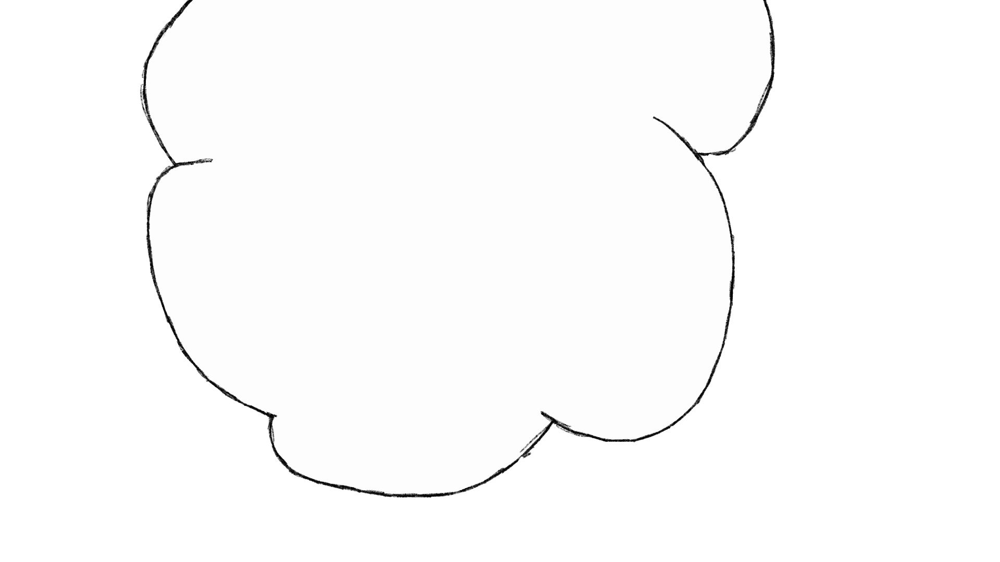
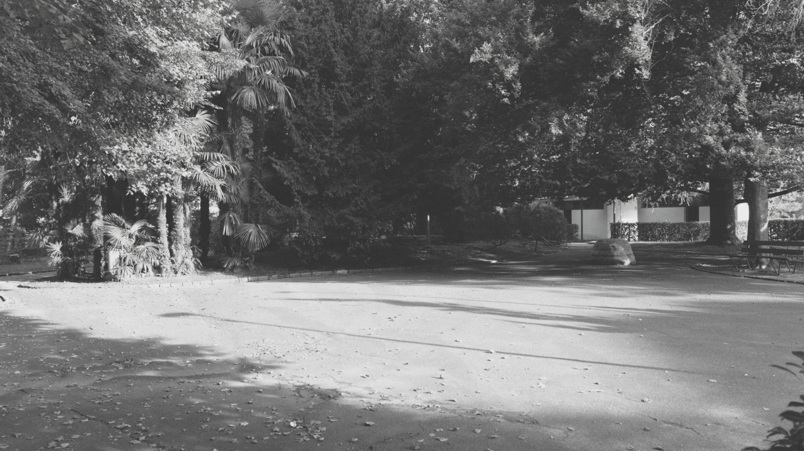
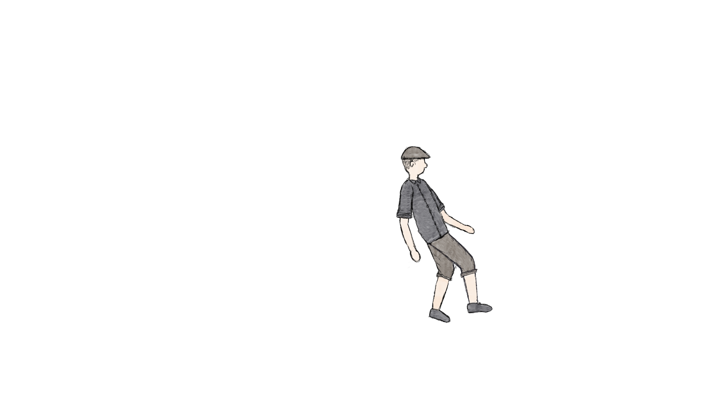
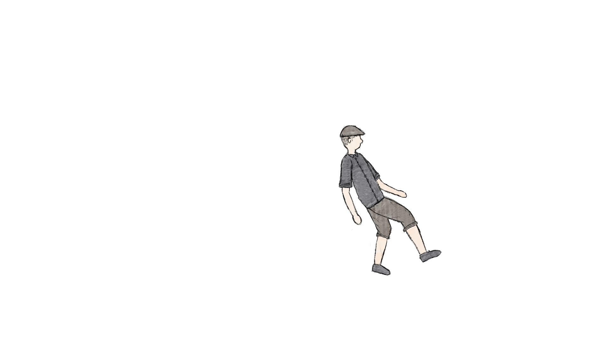
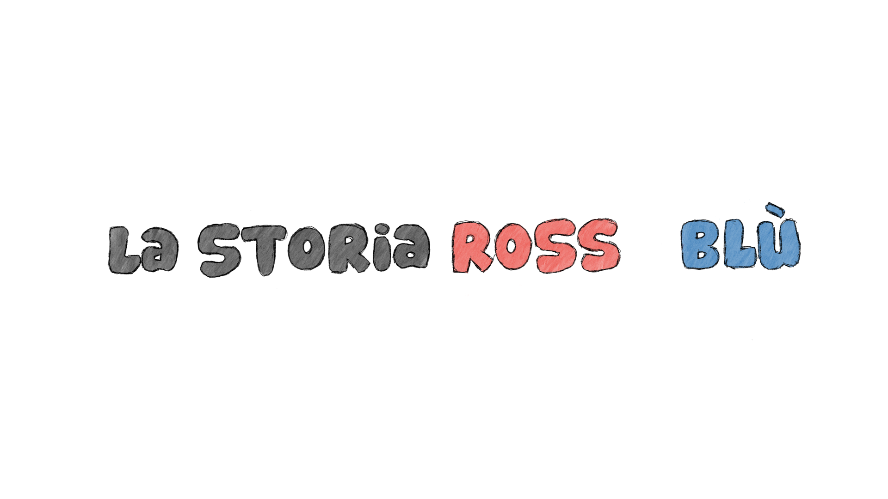

INFO.
Le scene che seguono rappresentano alcuni episodi selezionati della storia del FC Chiasso. Non hanno la pretesa di essere complete, ma costituiscono una libera e soggettiva interpretazione.
Tutte le fotografie sono state realizzate da me, ad eccezione dell’immagine del «Campo del Gas». Le persone rappresentate sono state disegnate a mano.